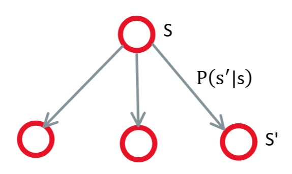
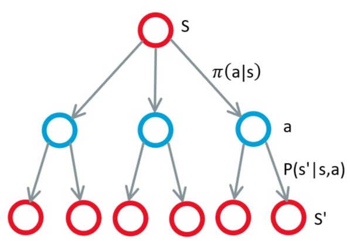

Markov <<
Previous Next >> 優化器
Markov Decision Process
在MRP中加入決策(decision)和動作(action)
- S：state 狀態
- A：action 動作
- P：狀態轉換
$$P(s_{s+1}=s'|s_t=s,a_t=a)$$
- R：獎勵，取決於當前狀態和動作會得到相對應的講勵
$$ R(s_t=s, a_t=a) = \mathbb{E}[r_t|s_t, a_t=a] $$
- D：折扣因子(discount factor)
$$\gamma \in [0,1]$$
MDP is a tuple：(S, A, P, R, $\gamma$)
policy (決策)：可以是一個決策行為機率或確定行為
$$\pi (a|s) = P(a_t=a|s_t=s)$$
MRP 和 MDP 轉換
| MRP |
↔ |
MDP |
| $P^{\pi}(s's) = \sum_{a\in A}\pi (a|s)P(s'|s, a)$ |
| $P^{\pi}(s) = \sum_{a\in A}\pi (a|s)P(s, a)$ |
|

圖1.MRP
|
|

圖2.MDP
|
state value function(狀態值方程式) $v^{\pi}(s)$
$$v^{\pi}(s) = \mathbb{E}[G_t|s_t=s]$$
$$= \mathbb{E}[R_{t+1}+\gamma v^{\pi}(s_{t+1})|s_t=s]$$
$$= \sum_{a\in A}\pi (a|s)q^{\pi}(s, a)$$

圖3.Backup Diagram for $V^{\pi}$
$$v^{\pi}(s) = \sum_{a\in A}\pi (a|s)(R(s, a)+\gamma \sum_{s'\in s}P(s'|s, a)v^{\pi}(s'))$$
action value function(行為方程式)$q^{\pi}(s, a)$
$$q^{\pi}(s, a) = \mathbb{E}[G_t|s_t=s, A_t=a]$$
$$= \mathbb{E}[R_{t+1}+\gamma q^{\pi}(s_{t+1}, A_{t+1})|s_t=s, A_t=a]$$
$$= R^a_s+\gamma \sum_{s'\in s}P(s'|s)v^{\pi}(s')$$
$$= R(s, a)+\gamma \sum_{s'\in s}P(s'|s) \sum_{a'\in A}\pi (a'|s')q^{\pi}(s', a')$$

圖4.Backup Diagram For $Q^{\pi}$
$$q^\pi(s, a)=R(s, a)+\gamma\sum_{s'\in S}P(s'|s, a)\sum_{a'\in A}\pi(a'|s')q^{\pi}(s', a')$$
Markov <<
Previous Next >> 優化器